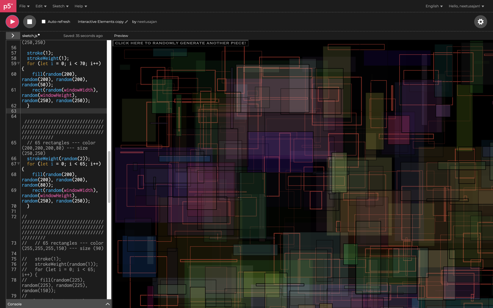

Research
The interaction I was assigned to was the random function.
Immediately what came to mind was generative art.
I specifically researched the works and processes of artists such as Sol LeWitt and Casey Reas.
I also google searched generative art within code and found examples on codepen.
Example 1
Example 2
I didn’t have a specific idea in mind prior to researching, instead I wanted to keep an open mind and see what I would be attracted to.
References
During my research, I noticed that I was drawn to the relationship created by the intersection of geometric and linear shapes.
I was also fascinated by the depth created through the randomized interactions between forms.
I did not look at a specific time period or movement but focused on finding inspiration that combined geometric shapes as well as elicited a sense of depth.
The specific references I used to ideate my design again combined some of the elements that I was looking into. ref
Sketches
Combining the ideas from my inspiration, I began freely sketching to visualize my ideas
Prototype
I began playing around in the P5 browser by generating random shapes and sizes which I unfortunately did not screenshot. I then focused on creating the rectangles- I created a for loop which produces a specific number of rectangles and then within the loop I added specifications such as the generation of random colors, random stroke weights, as well as the random sizes.
I proceeded with a similar process by creating a specfic number of rectangles that all fit within a specific subset of conditions. So the next set of rectangles as shown below were 30 rectangles that were randmly dispersed within the height and width of the screen- but this time at a larger interval of sizes and a smaller interval of colors and transparency.
I kept going creating numerous sets of rectangles that randomized within differing intervals.

Working Site
Link to my interative elements page
The final design is a myriad of shapes and colors coming together to create a cohesive artwork. I used the random function to achieve this while also adding contraints to keep the peice visually interesting.
Personally, the final product reminds me of the influx of
data and information we are presented with daily in
the digital era; it’s like a transcendental abyss that is yet to be explored.
Refinement
As my interaction was the random function, I wanted to highlight the function through the generative process of the interaction. I was more so focused on the specific end product. Now looking at the work objectively, I think I could improve the project by adding another interaction to coincide with the existing function as it may make the overall work more interesting.
I made some refinments and added a click and keyboard function to generate new work. The click function generates the rectangle piece while the keybaord funtion generates the new circular pieces.